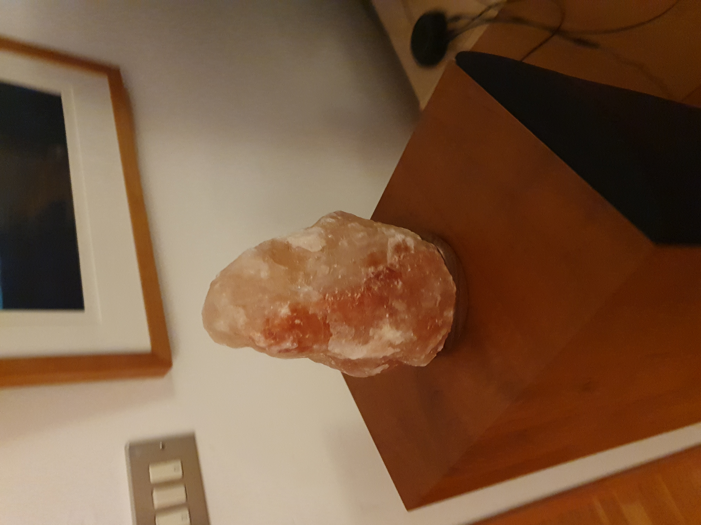
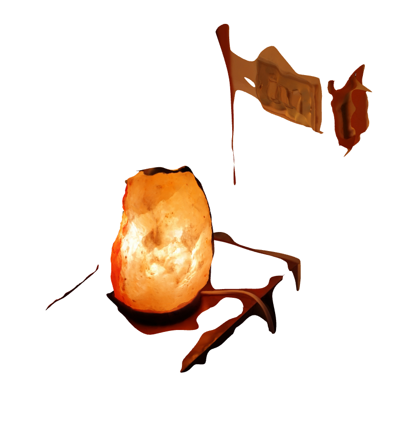
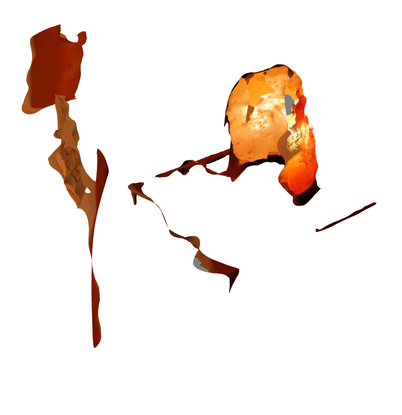
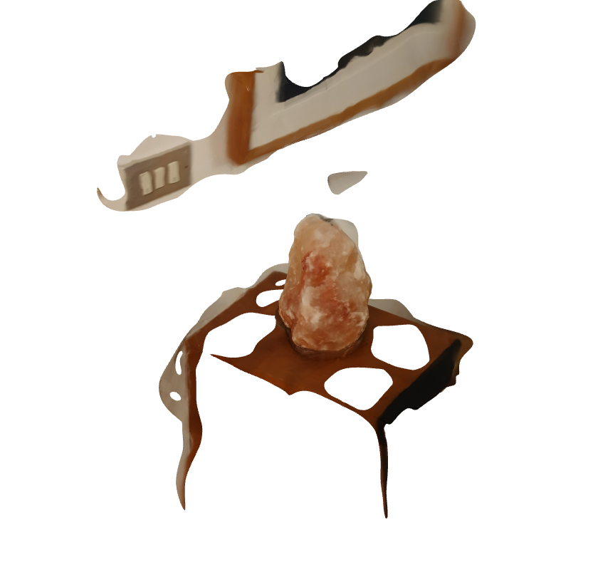
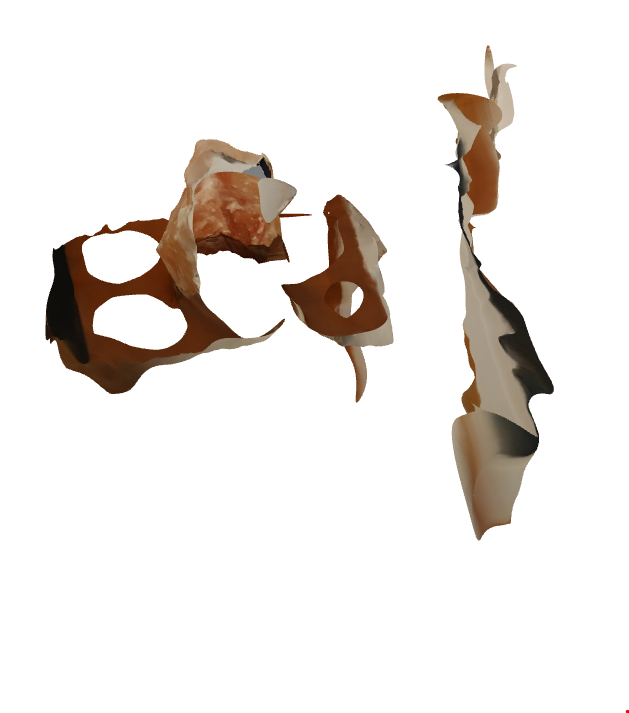
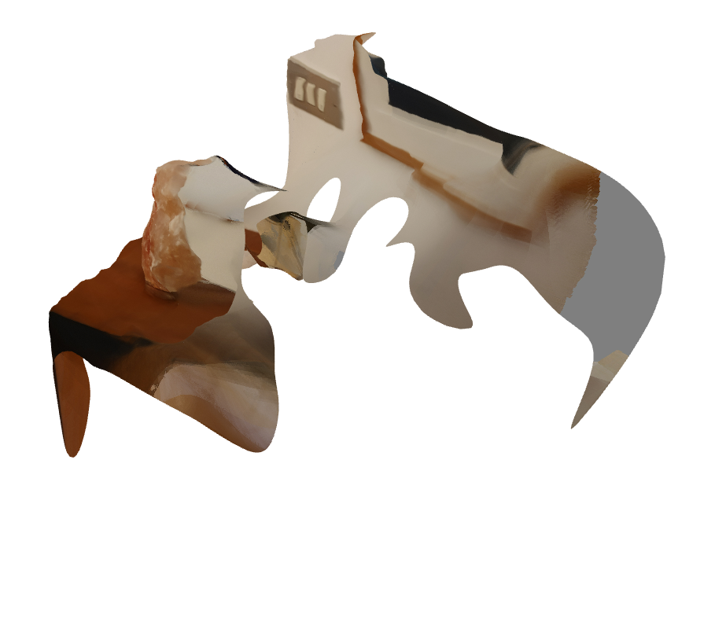

This project was about getting to know 3D scanning or photogrammetry to be more precise.
I desided to use to ReCap Photo software from Autodesk. It is very easy to use, you simply load up the software and upload the image files to a cloud based strorage. Then the images will be processed and then you're notified when the 3D object is ready to be downloaded. ReCap Photo has a limit of 100 images.
I had initially planned to use Meshroom and scan myself as an experiment with my friend Aron who did it with Regard. But I didn't figure out how Meshroom worked and therefore used ReCap instead.
I also desided not to scan myself and the object I desided to scan was a saltstone lamp, both with the light turned on and off to see if the light would distort the scanning process. Because photogrammetry relies heavily on reading shadows and how the light hits the object. Maybe I'll try scanning myself later.
This is the lamp in question.

To make a new project in ReCap Photo, under Create 3D there are two options, Areal and Object. I used object. Then you load up the photos and then the project can be seen under My Cloud drive section. When the project is ready and has been downloaded it moves to the My Computer section where it can be viewed.
I had taken way to many photos and therefor had to delete most of them. For the photos of the lamp turned on, I just deleted them randomly but I put more thinking in to it when I was deleting photos from the lamp turned off folder.
So here is how it turned out with the lamp turned on.


And whith the lamp turned off.


As you can see it didn't turn out great, in both cases it has a hole on one side and the surroundings are patchy and distorted. But from some angles the lamp does look good in both cases and it seems that since the light coming from the lamp is not that bright the software has handled that quite well.
For both these cases I had enabled a auto cut feature and therefore desided to run the lamp-off photos again and not enable the auto cut feature. Here is how that turned out.


It turned out maybe a little bit better, at least for the surroundings, even though they are not great. But the area where the hole was before is still very weird and distorted. So I think I would need to retake the pictures and make sure that they cover every angle.